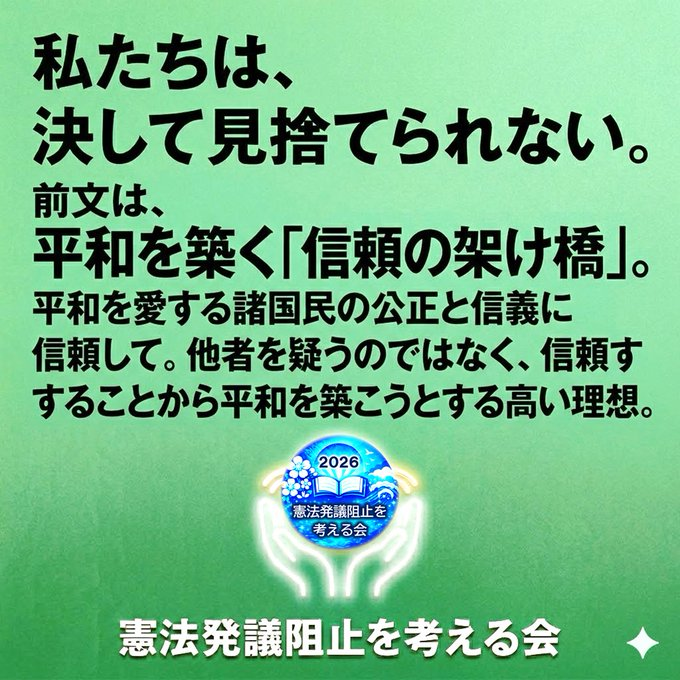
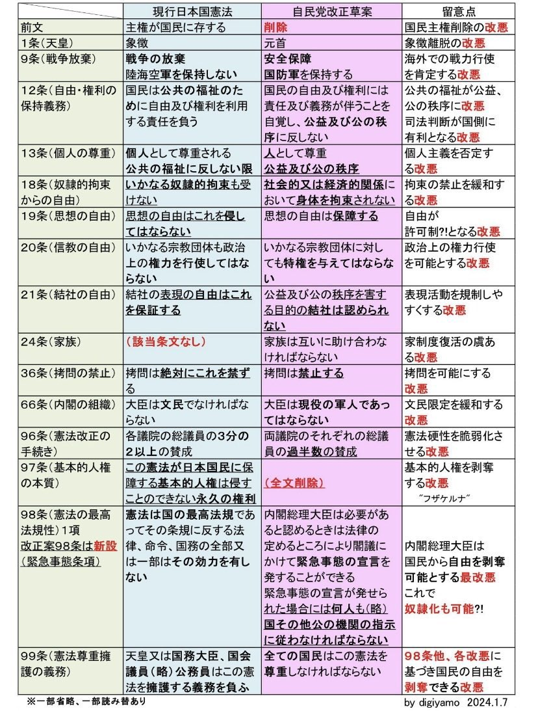
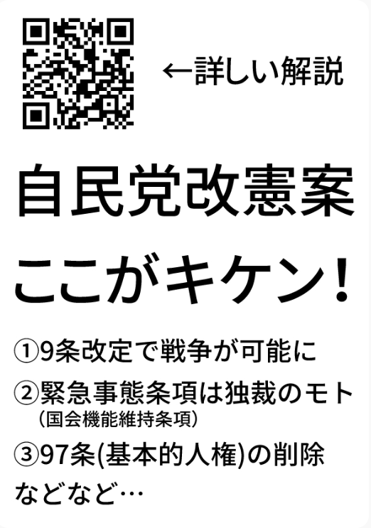
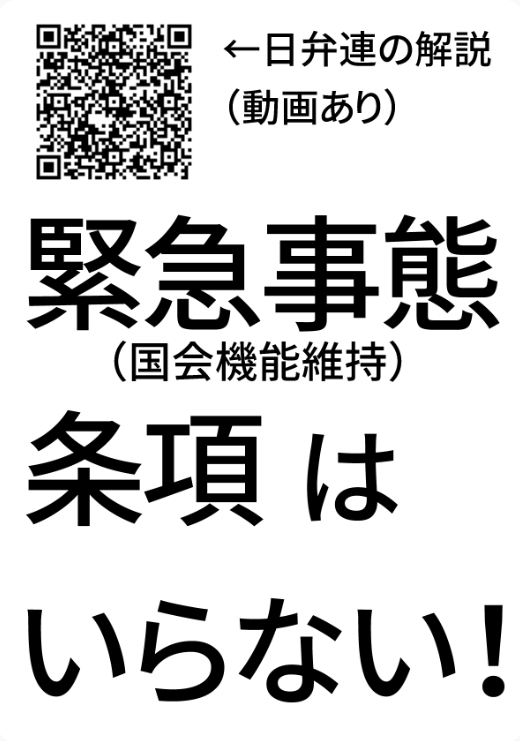
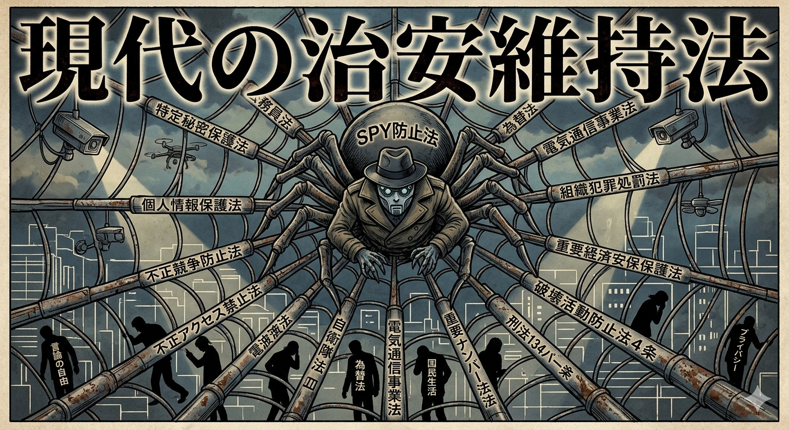
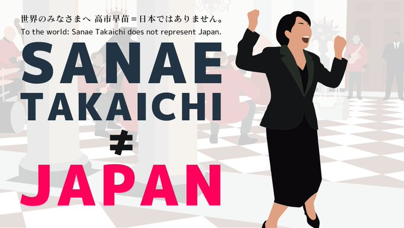
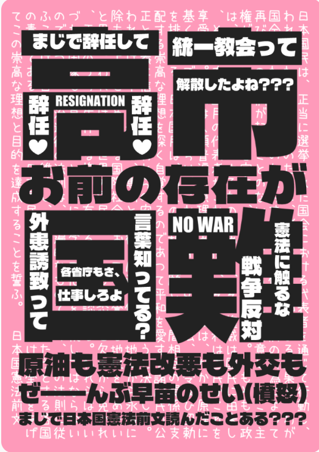
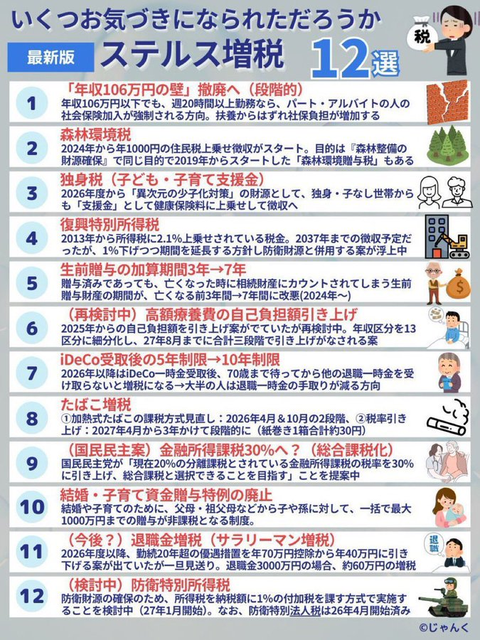
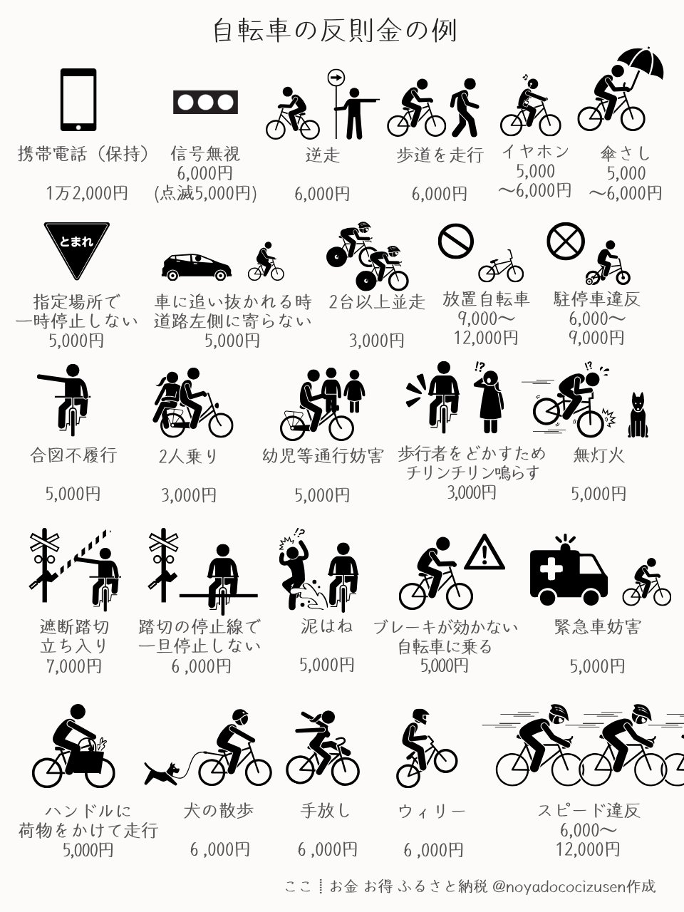
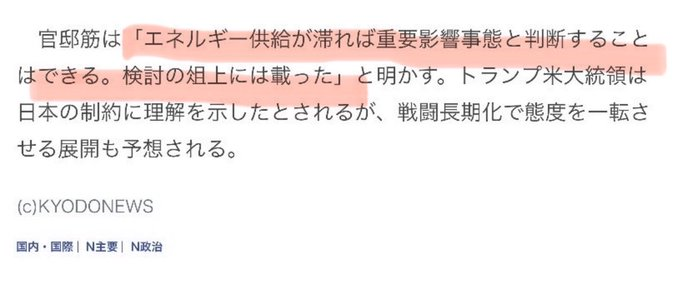

#改憲反対 #高市やめろ #戦争反対





現在、日本にはスパイ行為を直接罰する「スパイ防止法」という名前の単一の法律はありません。しかし、18以上の既存の法律が、すでに網の目のように社会を覆っています。
「スパイ防止法」が「現代の治安維持法」と危惧される最大の理由は、「何がスパイ行為（国家機密）にあたるのか」という定義が、時の権力によって広範かつ曖昧に運用されるリスクにあります。
多層的な網：特定秘密保護法や経済安保法など、既存の法律ですでに必要な処罰は可能です。それらを統合・強化する「スパイ防止法」の制定は、安全保障のためというより、国民の知る権利や言論を抑え込むための「最後の鍵」になる可能性があります。
監視の日常化：不正アクセス禁止法や電波法などが、スパイ捜査という名目で拡大解釈されれば、私たちの日常的なデジタル通信すべてが蜘蛛の巣に捉えられる対象となり得ます。
プライバシーの終焉：かつての治安維持法が「思想」を裁いたように、現代のスパイ防止法は「情報の流れ」を止めることで、個人の内面やプライバシーを実質的に支配する装置になるかもしれません。





1. 運輸・物流（最も直接的な打撃）
燃料費30%増により「4社に1社が赤字転落」の危機。中東情勢による航路変更も供給網を圧迫。
2. 製造業
化学・プラスチック、鉄鋼・非鉄金属、ガラス・セメント、紙・パルプ・繊維 ― エネルギー集約型産業はすべて高リスク群。
3. 農林水産業
農業機械の約95%が軽油を使用。燃料高騰は収益を直撃。石油由来の肥料の不足・価格高騰も深刻。
4. 生活基盤・医療
電力・ガス料金上昇に加え、注射器・点滴袋などの医療用プラスチック製品（石油由来）の供給不足も懸念。
スタグフレーション：不況とインフレが同時進行。輸入依存度の高い日本は円安と相まって影響が増幅されやすい。（2026年3月時点）
現代医療は、その精緻さゆえに「石油」という単一のリソースに過度に依存しています。石油供給の途絶は、単なるエネルギー不足にとどまらず、医療崩壊へ直結する構造的リスクを孕んでいます。
■ 物資の枯渇：使い捨て文化の終焉
私たちが日常的に目にする医療現場の風景は、実は石油製品の集積体です。
・衛生管理の崩壊：ビニール手袋、マスク、ガウンといった感染防止具の供給が止まれば、標準的な医療行為そのものがリスクとなります。
・薬剤・輸液の供給不安：点滴バッグ、シリンジ（注射器）、そして多くの医薬品の成分や容器に石油誘導体が使われています。「作れない」だけでなく、物流の麻痺によって「届かない」事態が現実味を帯びます。
■ 救命の限界：高度医療の停止
電力と石油製品に支えられた高度な治療ほど、危機の波をダイレクトに受けます。
・手術室の沈黙：手術器具の滅菌、麻酔ガス、そして人工心肺装置。これらを動かすエネルギーと使い捨ての消耗品が欠ければ、緊急手術すら困難になります。
・透析療法の危機：腎不全患者にとっての命綱である人工透析は、大量の水と電力、そして石油由来のフィルター（ダイアライザー）を消費します。供給の寸断は、文字通り「死」に直結する時間制限を突きつけます。
■ 構造的な問い：私たちは何に命を預けているのか
石油危機は、効率化と清潔さを追求した結果としての「ディスポーザブル（使い捨て）医療」の限界を露呈させます。
「蛇口をひねれば水が出るように、病院に行けば治療が受けられる」
この当たり前だと思っていた前提は、実は極めて不安定なエネルギー構造の上に立脚しています。私たちは今、物質的な豊かさの背後にある、命のインフラの「薄氷の脆さ」を直視せざるを得ません。